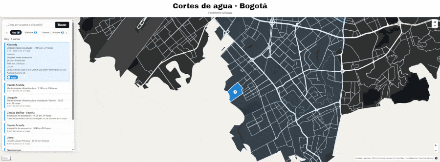

Proyecto destacado · en desarrollo · 2026
Cortes de agua Bogotá · API y mapa en vivo
Una Azure Function en Python scrapea a diario la programación de cortes de agua del Acueducto de Bogotá, la normaliza y la expone por HTTP con identidad administrada, sin contraseñas en la cadena de conexión. Una app en React y MapLibre GL JS consume esa API y ubica los cortes sobre un mapa vectorial del perímetro urbano, con estilo de afiche: rotado 90°, en escala de grises y recortado a los límites oficiales de la ciudad.
Al abrir el mapa resalta los barrios afectados hoy y deja moverse entre días con una tira de fechas, además de buscar por barrio, localidad o dirección con geocodificación de IDECA.
- Scraper diario con deduplicación por hash y migraciones idempotentes
- Emparejamiento de nombres contra 5.102 barrios oficiales de IDECA
- Renderizado a medida: mapa rotado, máscara geográfica y marcadores numerados
- Búsqueda por barrio, localidad o dirección con geocodificación
